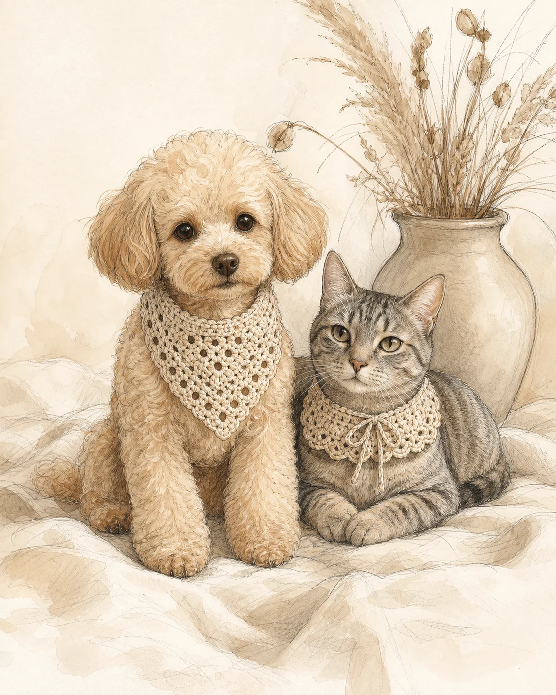

ABOUT PAWS & LOOPS
Paws & Loops was created out of love for pets and the joy of making things by hand.
Every piece is handmade with care, using soft, comfortable yarns and simple, timeless designs that let your pet feel their best.
We believe in quality over quantity, thoughtful details and custom creations that celebrate their unique personality.
Made with love,
just for them... ♡
